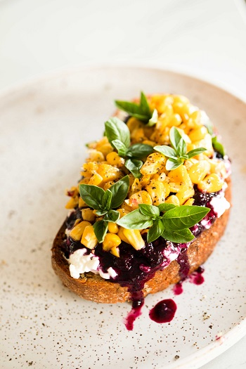
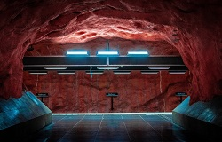

<!DOCTYPE html>
<html lang="en-US" dir="ltr">

<head>
    <meta charset="UTF-8" />
    <meta http-equiv="X-UA-Compatible" content="IE=edge" />
    <meta name="viewport" content="width=device-width, initial-scale=1.0" />
    <link rel="shortcut icon" href="favico.ico" type="image/x-icon" />
    <title> Image, image map and picture </title>
</head>

<body>

    <!-- image -->
    <!--  <br />
     -->

    <!-- image map -->
    <!-- 
    <map name="map">
        <area shape="circle" coords="337, 302, 44" href="https://www.w3schools.com/html/coffee.htm" target="_blank"
            alt="coffee" title="coffee" />
        <area shape="rect" coords="290, 171, 335, 248" href="https://www.w3schools.com/html/phone.htm" target="_blank"
            alt="phone" title="iphone" />
        <area shape="rect" coords="34, 42, 274, 350" href="https://www.w3schools.com/html/computer.htm" target="_blank"
            alt="laptop" title="laptop" />
    </map> -->

    <!-- picture -->
    <!-- <picture>
        <source media="(min-width:650px)" srcset="images/food.jpg" />
        <source media="(min-width:465px)" srcset="images/modern-cave.jpg" />
        
    </picture> -->

</body>

</html>